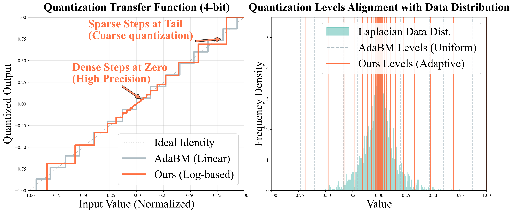
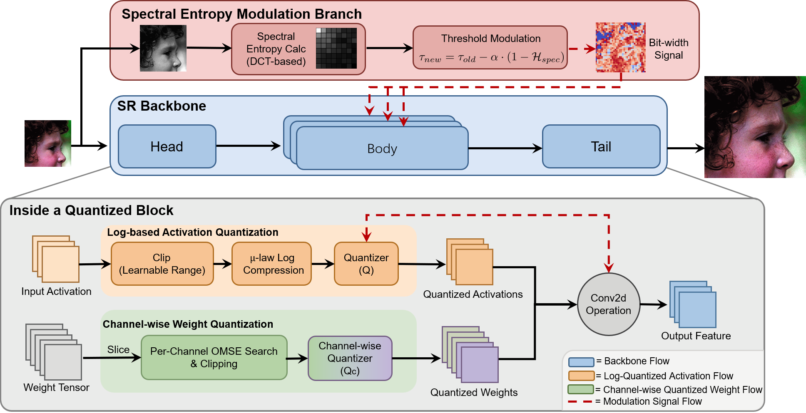
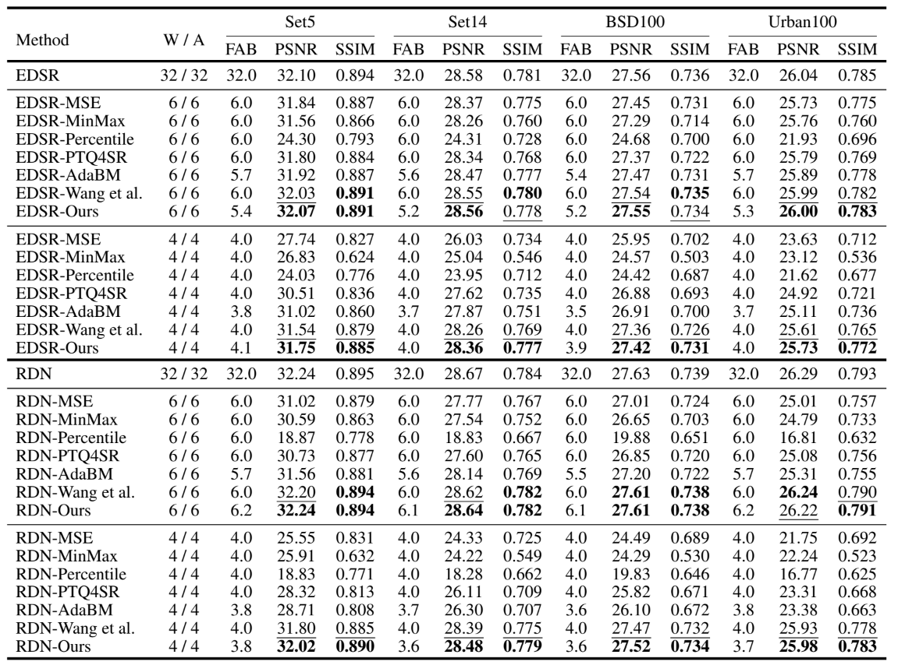

SE-LogQ: Spectral Entropy Modulated Logarithmic Quantization for Image Super-Resolution
Abstract
Quantization-Aware Training (QAT) and Post-Training Quantization (PTQ) represent the two main approaches for efficient deployment of super-resolution (SR) models under low-bit quantization. Unlike QAT, which requires retraining, PTQ is often preferred for its rapid deployment. However, improving PTQ accuracy remains challenging due to two key issues: linear quantization grids poorly approximate the heavy-tailed activation distributions of SR models, and magnitude-based calibration metrics underrepresent low-contrast yet structurally critical features. To address these issues, we propose SE-LogQ, a spectral entropy modulated logarithmic quantization framework. A logarithmic quantization scheme with channel-wise scale optimization aligns with the Laplacian-like SR activations while adapting to diverse channel dynamic ranges. A spectral entropy guided bit-allocation strategy leverages frequency-domain statistics to quantify structural regularity, decoupling feature importance from signal magnitude and ensuring precise allocation for subtle textures and edges. Extensive experiments reveal that SE-LogQ outperforms state-of-the-art PTQ methods in reconstruction quality while incurring minimal computational cost.
Methodology Overview


Quantitative Results
SE-LogQ demonstrates superior performance across standard benchmarks, particularly in the challenging W4A4 setting.

Qualitative Results
Traditional linear uniform quantization methods often suffer from severe structural collapse and fail to reconstruct dense grid patterns. In contrast, SE-LogQ effectively suppresses these artifacts, faithfully restoring continuous diagonal grids and preserving sharp, high-contrast edges. Our entropy-driven strategy successfully targets subtle structures, adaptively allocating higher bit-widths to faint facial features, smooth gradients in skies, and low-luminance textures.